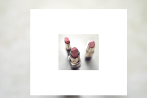
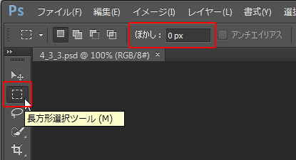
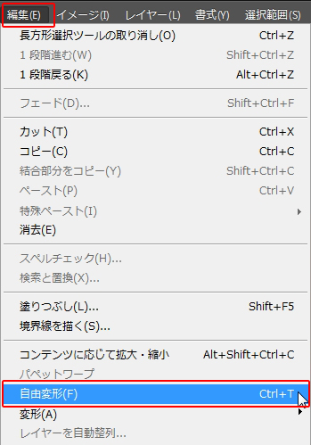
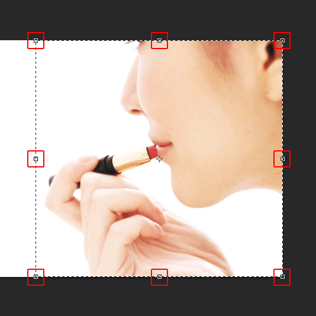
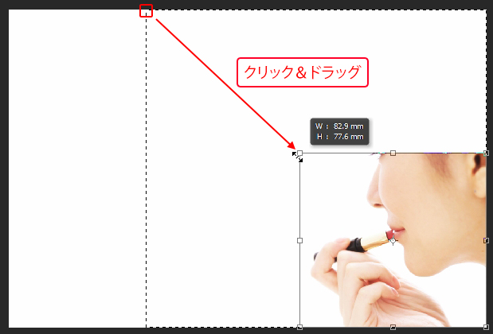
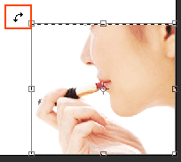
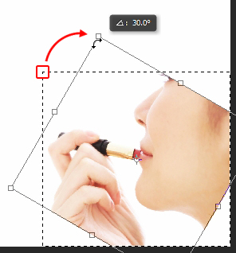

本項では画像内の選択箇所を拡大縮小・回転させる方法を学習します。
画像内に選択範囲を作成し、変形すれば下図のように部分的に縮小することが可能です。

素材フォルダ「PS04」から素材ファイル4_3_3.psdを開きましょう。
この写真の人物を選択し、縮小します。
［ツールパネル］から［長方形選択ツール］を選択しましょう。
コントロールパネルでぼかしが《0px》になっているかを確認しておきましょう。

［長方形選択ツール］を使って、女性を選択します。
選択ができましたら、メニューバーの[編集]-[自由変形]を選択します。

[自由変形]を選択すると、画像の四隅と四辺の中央にバウンディングボックスが表示されます。

このバウンディングボックス上でクリック＆ドラッグすれば画像を拡大縮小することができます。

また、四隅から少し離れたエリアにマウスをもってくると、
下図のようにマウスカーソルが変わるときがあります。

このときに、ドラッグすれば、選択している範囲を回転することができます。

また、これらの変形は確定しなければ、完全に変形したことになりません。
変形した選択範囲内でダブルクリックすると、変形が確定します。
以上でこの項の学習は終了です。
ファイルは閉じて次の項へ進んでください。